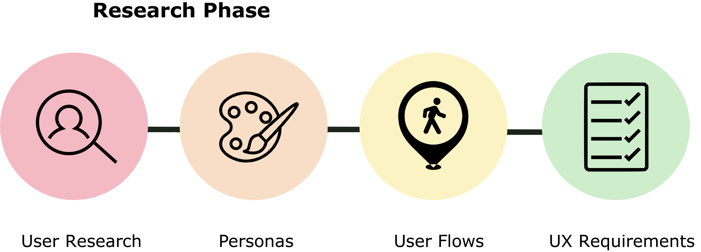
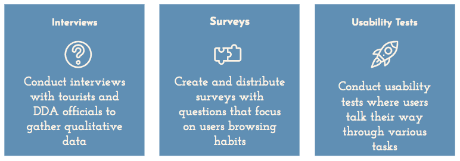
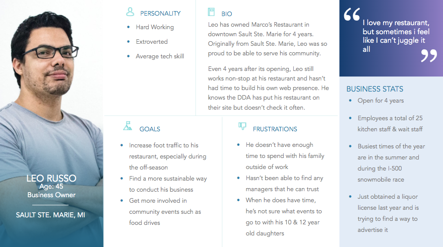
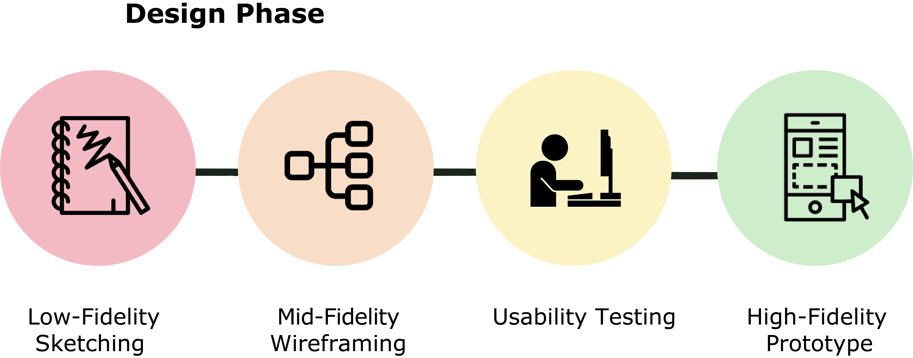
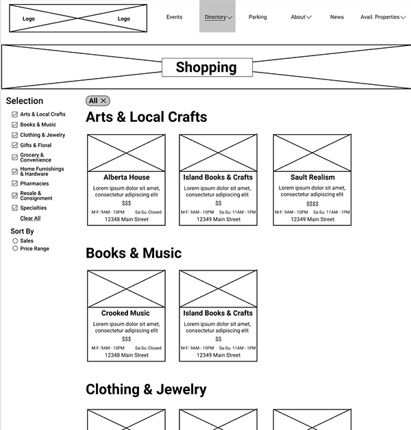
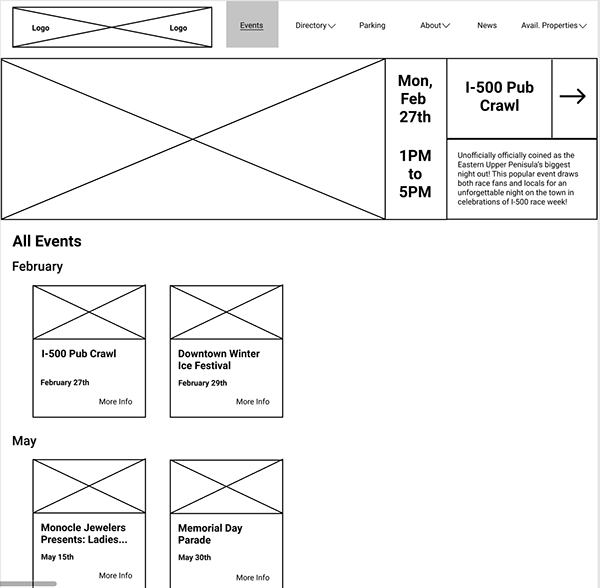
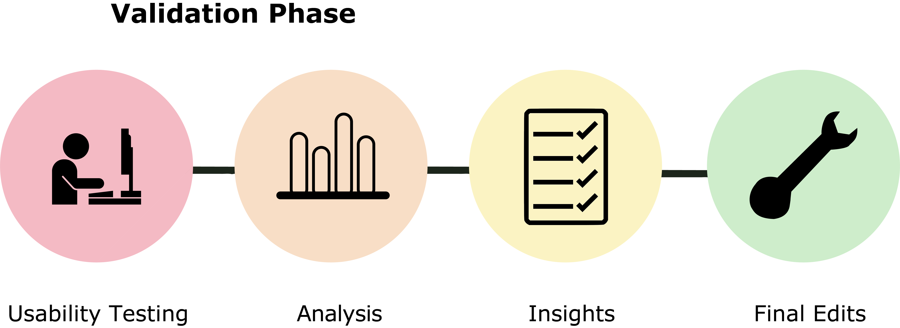
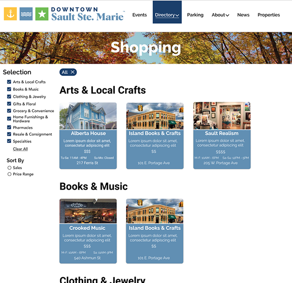
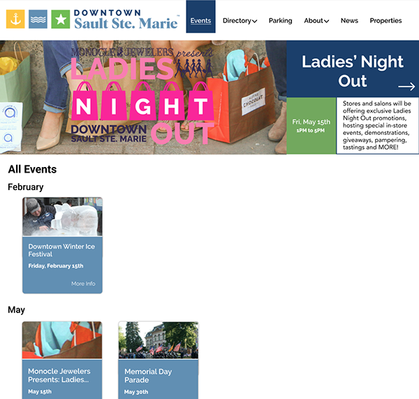
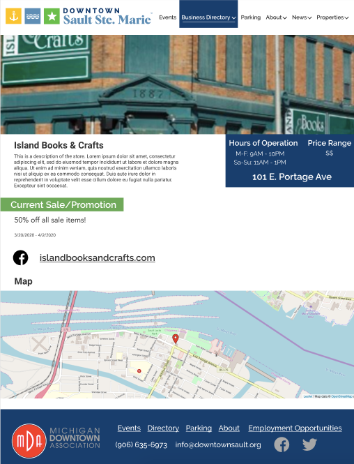

Sault Ste. Marie Redesign
Back to ProjectsFor my undergraduate capstone course, my team received our client- the Sault Ste. Marie Downtown Development Authority (DDA). The DDA website needed improvements to draw more business to its downtown attractions year-round.
We followed an iterative design process to pursue our scoped research questions. The design process consists of three phases: Research, Design, and Validation. First, we conducted interviews, surveys, and usability tests with current and prospective tourists of the Northern Michigan area. Then, we designed low-fidelity mockups based on our research findings. Taking the designs, we validated our results to a final layout with recommendations.









